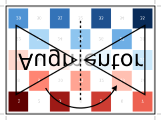

FlipY: Mirror vertically
Augmentor.FlipY — Type.FlipY <: Augmentor.AffineOperationDescription
Reverses the y-order of each pixel column. Another way of describing it would be to mirror the image on the x-axis, or to mirror the image vertically.
If created using the parameter p, the operation will be lifted into Either(p=>FlipY(), 1-p=>NoOp()), where p denotes the probability of applying FlipY and 1-p the probability for applying NoOp. See the documentation of Either for more information.
Usage
FlipY()
FlipY(p)Arguments
p::Number: Optional. Probability of applying the operation. Must be in the interval [0,1].
See also
Examples
julia> using Augmentor
julia> img = [200 150; 50 1]
2×2 Array{Int64,2}:
200 150
50 1
julia> img_new = augment(img, FlipY())
2×2 Array{Int64,2}:
50 1
200 150| Input | Output for FlipY() |
|---|---|
 |  |